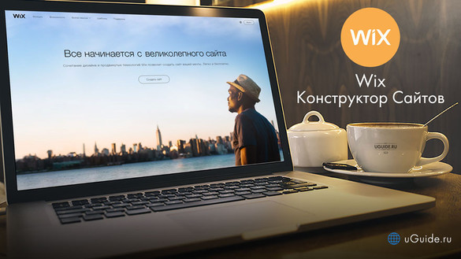

Программное обеспечение для разработки сайтов


Wix

Обзор конструктора сайтов Wix
Конструктор сайтов Wix используют 80+ млн. человек во всем мире. Эта цифра говорит о
востребованности платформы в своей нише. Её первая доступная для пользователей версия
вышла в 2006 г. С тех пор прошло уже 12 лет – и это очень хороший показатель для этой
сферы. Но так ли далеко ушёл движок от своей первоначальной задумки на самом деле?
Давайте разбираться! Представляем вашему вниманию детальный обзор Wix – одного из лучших
конструкторов сайтов Рунета.
Оглавление
1
Дизайны и работа с шаблонами
Wix на текущий момент содержит 500+ шаблонов, отсортированных по категориям: магазин, бизнес, фотография,
видео, музыка, дизайн, рестораны, события, портфолио, блог, красота и здоровье, мода, искусство, лендинги.
Сразу после регистрации вам предложат выбрать дизайн для сайта. Можете фильтровать выборку по новизне или
популярности. Кстати, однажды выбранный шаблон нельзя изменить в процессе работы. Так что выбирайте более-менее
вдумчиво. Полноэкранный предпросмотр возможен.
Wix обладает самым интересным в нише набором готовых шаблонов. Их приятно рассматривать, разнообразие подходов
и структур зашкаливает. Периодически разработчики пополняют библиотеку дизайнов. В год приходят примерно 30-60
новых образцов. Все их можно использовать бесплатно. Каждый шаблон является адаптивным. Также вы можете выбрать
чистый лист и оформить каждую страницу вашего сайта с нуля в редакторе.
Кстати, невозможность смены шаблона в процессе объясняется абсолютным позиционированием элементов на сайтах Wix. Это даёт свободу действий в оформлении дизайна, но рубит в корне возможность экспорта настроек и контента в новый шаблон. То есть правило одного шаблона, назовём его так, обусловлено чисто техническими причинами. Такова расплата за гибкость кастомизации дизайна.
Кстати, невозможность смены шаблона в процессе объясняется абсолютным позиционированием элементов на сайтах Wix. Это даёт свободу действий в оформлении дизайна, но рубит в корне возможность экспорта настроек и контента в новый шаблон. То есть правило одного шаблона, назовём его так, обусловлено чисто техническими причинами. Такова расплата за гибкость кастомизации дизайна.
Мобильную версию шаблона можно настроить отдельно, переключившись на неё в шапке редактора. Меню, формат изображений,
закрепление отдельных элементов (контакты, кнопка «наверх»), фон, скрытие элементов можно регулировать.
Также можно задействовать автоматическую оптимизацию в один клик – результат получается хорошим. Изменения
в мобильной версии сайта не коснутся десктопной. При редактировании большой версии центр страницы будет выделен
пунктирными линиями – именно эта область попадёт в мобильный шаблон. Можно ориентироваться по ней.
Редактор позволяет до неузнаваемости изменить стоковый дизайн путём добавления новых секций (виджет «Полоска»),
виджетов, изображений и настройки их внешнего вида. Везде можно добавить эффекты, анимации, если нужно,
настроить размеры, отступы, слои, фоны, шрифты, формы элементов и прочее. Внешний вид сайта на Wix в большей
степени зависит от ваших дизайнерских навыков, чем от выбранного шаблона. Хотя можно опубликовать свой контент
с минимумом изменений в подходящем тематике шаблоне и получить готовый сайт. Как больше нравится.
2
Функциональные возможности
Совокупные возможности Wix состоят из: функционала редактора, общих настроек, панели управления,
установленных сторонних приложений и опций, которые можно внедрить на сайт самостоятельно при помощи инструмента Wix Code.
Любой раздел редактора содержит подсказки по работе с ним. При наведении курсора на кружочек «i» отобразится
краткое пояснение и ссылка на полный вариант FAQ по теме. Абсолютно все опции и виджеты снабжены пояснениями,
просто в некоторых нужно нажать на знак «?» для вызова всплывающего окна с инструкцией. Также можно сразу пойти
в Центр Поддержки – базе знаний Wix с возможностью поиска ответов по запросу. Пробежавшись по категориям базы
знаний глазами, вы сможете получить представление о возможностях конструктора – названия разделов FAQ чётко
перечисляют функционал.
3
Ценовая политика Mobirise (цены на тарифы)
Wix можно использовать бесплатно неограниченно долго тем, кого устраивает сайт на поддомене вида:
uguide.wixsite.com/sitename. Большинство функций конструктора будут доступны. Подключить свой домен и получить
более богатую функциональность можно после оплаты одного из следующих тарифных планов.
Тарифные планы Wix:
1. Connect Domain (от 4.08$/мес) – позволяет подключить свой домен, получить премиальную техподдержку и даёт 500 Мб дискового пространства, но не удаляет рекламу Wix;
2. Combo (8.25$/мес) – 3 Гб места, бесплатный домен, удаление рекламы, фавикон;
3. Unlimited (12.42$/мес) – увеличение дискового пространства до 10 Гб, конструктор форм, приложение Site Booster;
4. eCommerce (16.17$/мес) – 20 Гб места, возможность подключить корзину. Тариф для создания магазина.
5. VIP (24.5$/мес) – все преимущества eCommerce, плюс 10 E-mail рассылок/мес, а еще аудит сайта экспертами Wix (дизайн, юзабилити, seo).
Тарифные планы Wix:
1. Connect Domain (от 4.08$/мес) – позволяет подключить свой домен, получить премиальную техподдержку и даёт 500 Мб дискового пространства, но не удаляет рекламу Wix;
2. Combo (8.25$/мес) – 3 Гб места, бесплатный домен, удаление рекламы, фавикон;
3. Unlimited (12.42$/мес) – увеличение дискового пространства до 10 Гб, конструктор форм, приложение Site Booster;
4. eCommerce (16.17$/мес) – 20 Гб места, возможность подключить корзину. Тариф для создания магазина.
5. VIP (24.5$/мес) – все преимущества eCommerce, плюс 10 E-mail рассылок/мес, а еще аудит сайта экспертами Wix (дизайн, юзабилити, seo).
Отметим, что старшие тарифные планы включают все преимущества младших плюс добавляют что-то новое.
Первый тариф может быть интересен желающим создать сайт-визитку или посадочную страницу на своём домене.
Небольшой и несложный сайт с умеренным количеством медиаконтента. Combo подойдёт для тех же целей,
но уже с большим размахом – можно сделать портфолио с большим количеством фотографий, завести блог
или создать сайт какой-нибудь организации.
Unlimited следует выбирать в случае, когда планируется загружать очень много контента и ожидает плотного наплыва
трафика в будущем. Это блоги с форумом, корпоративные сайты и остальные схожие по сложности и объёму проекты.
eCommerce для тех, кто хочет торговать. Особенно интересной выглядит возможность продажи цифровых товаров.
Для оформления витрин с тысячами позиций инструментов, стройматериалов, спецодежды и прочего есть более
подходящие конструкторы, а вот продажа музыки, иллюстраций или фотографий с Wix – очень удачная затея.
4
Плюсы и минусы
О Wix хочется говорить хорошо. Многие вещи впервые в нише появились именно в этом конструкторе.
Новые и полезные идеи, аналоги которых у конкурентов ещё не реализованы. Базовый функционал на высшем уровне.
Подтверждением качества служат более 120 миллионов сайтов, опубликованных пользователями в рамках Wix.
Вряд ли все эти люди ошибаются.
Так что же они все нашли в этом конструкторе? Большинство ответов изложены выше в разделах о функциональности. Большие объёмы возможностей, крепкое качество реализации, стандартизация интерфейсов приложений, креативная атмосфера, тонны подробных справочных материалов, текстовых и видео (у Wix есть канал на YouTube). Машина Wix давно набрала обороты, её разработчики могут себе позволить прилично инвестировать в новые функции. Что и делают.
В данном конкретном случае выделим лишь специфические и идейные достоинства Викс. Ещё раз перечислять функционал не станем, повторимся, – если интересны детали, почитайте разделы обзора выше или зайдите в Wix, посмотрите всё сами. Итак, чем реально хорош обозреваемый сервис?
-Магазин приложений. Большой ассортимент реально полезных вещей, выполненных в единой стилистике интерфейса с конструктором. Приложения воспринимаются как родные, но временно не подключенные модули сайта. С их помощью можно решить множество важных и специфических задач, особо не напрягаясь.
-Классный интерфейс. Это проявляется везде – в эргономике и атмосфере редактора, всяких менюшках, опциях, формате панели управления, прозрачности отдельных элементов, их размере и прочем. Приятно пользоваться.
-Оформление дизайна. Wix позволяет создавать действительно разнообразные, интересные визуально сайты. Элементы на макете никак не привязаны друг к другу (абсолютное позиционирование), их можно комбинировать в любых сочетаниях и позициях. Всё это без кодинга.
-Рентабельность. Стоимость тарифов Wix сравнима с таковой у большинства более-менее достойных конкурентов. Где-то чуть дороже, где-то дешевле. Тем не менее, флагманский конструктор постоянно выдаёт огромные скидки, в отличие от многих других систем. Ценовая политика мягкая. Да, маркетинг. Но какая разница, если цена стала намного ниже?
-Отсутствует импорт товаров. Странно, что разработчики до сих пор не добавили возможность загрузки товаров в магазин из CSV, чтобы раздел физических товаров наполнился из табличного файла. Народ бы одобрил.
-Имеются ограничения. На двух младших тарифных планах предусмотрено ограничение пропускной способности канала. То есть при большом количестве медиафайлов на страницах и среднем наплыве посетителей сайт начнёт ощутимо лагать, страницы могут начать отказываться загружаться.
Так что же они все нашли в этом конструкторе? Большинство ответов изложены выше в разделах о функциональности. Большие объёмы возможностей, крепкое качество реализации, стандартизация интерфейсов приложений, креативная атмосфера, тонны подробных справочных материалов, текстовых и видео (у Wix есть канал на YouTube). Машина Wix давно набрала обороты, её разработчики могут себе позволить прилично инвестировать в новые функции. Что и делают.
В данном конкретном случае выделим лишь специфические и идейные достоинства Викс. Ещё раз перечислять функционал не станем, повторимся, – если интересны детали, почитайте разделы обзора выше или зайдите в Wix, посмотрите всё сами. Итак, чем реально хорош обозреваемый сервис?
Преимущества
-Частые обновления. Новые фишки вроде Wix Code, ADI, интегрированного графического редактора, добавления 360-градусных картинок и синемаграфов, соавторов для сайта и многие другие приходят в нишу от Wix. Что-то из этого больше, что-то – меньше по значимости, тем не менее, Викс часто выступает законодателем мод в мире сайтбилдеров с визуальным редактором.-Магазин приложений. Большой ассортимент реально полезных вещей, выполненных в единой стилистике интерфейса с конструктором. Приложения воспринимаются как родные, но временно не подключенные модули сайта. С их помощью можно решить множество важных и специфических задач, особо не напрягаясь.
-Классный интерфейс. Это проявляется везде – в эргономике и атмосфере редактора, всяких менюшках, опциях, формате панели управления, прозрачности отдельных элементов, их размере и прочем. Приятно пользоваться.
-Оформление дизайна. Wix позволяет создавать действительно разнообразные, интересные визуально сайты. Элементы на макете никак не привязаны друг к другу (абсолютное позиционирование), их можно комбинировать в любых сочетаниях и позициях. Всё это без кодинга.
-Рентабельность. Стоимость тарифов Wix сравнима с таковой у большинства более-менее достойных конкурентов. Где-то чуть дороже, где-то дешевле. Тем не менее, флагманский конструктор постоянно выдаёт огромные скидки, в отличие от многих других систем. Ценовая политика мягкая. Да, маркетинг. Но какая разница, если цена стала намного ниже?
Недостатки
-Не интуитивный. Множество настроек, приложений, возможностей редактора, свободы компоновки дизайна… Всё это сложнее использовать, чем вам хотелось бы. Особенно на первых порах. Интерфейс всячески помогает пользователю, тем не менее, нужно время на привыкание к нему и освоение сценариев использования возможностей конструктора.-Отсутствует импорт товаров. Странно, что разработчики до сих пор не добавили возможность загрузки товаров в магазин из CSV, чтобы раздел физических товаров наполнился из табличного файла. Народ бы одобрил.
-Имеются ограничения. На двух младших тарифных планах предусмотрено ограничение пропускной способности канала. То есть при большом количестве медиафайлов на страницах и среднем наплыве посетителей сайт начнёт ощутимо лагать, страницы могут начать отказываться загружаться.
5
Выводы и рекомендации
Wix – самый лучший и перспективный конструктор сайтов в нише
решений с визуальным редактором. С технической и дизайнерской точек зрения. Его разработчики поставили перед собой
и решили несколько сложных задач:
Сделали интерфейс, в котором удобно работать, несмотря на миллион функций. Вышли за рамки ограничений WYSIWYG-редактора, внедрив Wix Code. Внедрили искусственный интеллект Wix ADI, который через некоторое время будет строить нам сайты, почти не требующие правок. Сделали магазин приложений неотъемлемой частью интерфейса и функционала, которой хочется пользоваться.
Конструктор подойдёт всем, кому нужен сайт-визитка любой тематики, портфолио, посадочная или промо-страница, блог или магазин для продажи цифровых товаров, каких-то крафтовых, штучных вещей, брендовой одежды, наручных часов и прочего в таком духе. Рекомендуем обратить внимание владельцев бизнеса по аренде жилья, ресторанов, кафе, концертных площадок (бронирование билетов) и всех, у кого деятельность связана с приёмом клиентов по расписанию (парикмахеры, визажисты, стоматологи, коучинг, йога, танцы, репетиторство).
Wix – многоцелевая машина для создания разнообразных сайтов. Благодаря качественным приложениям и гибкому редактору функциональные рамки очень широкие, а с учётом потенциала Wix Code они практически исчезают. Использование HTML и JavaScript возможно, но совершенно необязательно. В меру простой, яркий конструктор, с кучей полезных, а местами даже удивительных по меркам ниши возможностей. При прямом сравнении аналогов по части функциональности не имеет.
Wix отлично подходит на роль первого конструктора сайтов. Даже если вы пока не решились на создание сайта, рекомендуем при случае познакомиться, в первую очередь, именно с Wix. Он оправдает ожидания.
Сделали интерфейс, в котором удобно работать, несмотря на миллион функций. Вышли за рамки ограничений WYSIWYG-редактора, внедрив Wix Code. Внедрили искусственный интеллект Wix ADI, который через некоторое время будет строить нам сайты, почти не требующие правок. Сделали магазин приложений неотъемлемой частью интерфейса и функционала, которой хочется пользоваться.
Конструктор подойдёт всем, кому нужен сайт-визитка любой тематики, портфолио, посадочная или промо-страница, блог или магазин для продажи цифровых товаров, каких-то крафтовых, штучных вещей, брендовой одежды, наручных часов и прочего в таком духе. Рекомендуем обратить внимание владельцев бизнеса по аренде жилья, ресторанов, кафе, концертных площадок (бронирование билетов) и всех, у кого деятельность связана с приёмом клиентов по расписанию (парикмахеры, визажисты, стоматологи, коучинг, йога, танцы, репетиторство).
Wix – многоцелевая машина для создания разнообразных сайтов. Благодаря качественным приложениям и гибкому редактору функциональные рамки очень широкие, а с учётом потенциала Wix Code они практически исчезают. Использование HTML и JavaScript возможно, но совершенно необязательно. В меру простой, яркий конструктор, с кучей полезных, а местами даже удивительных по меркам ниши возможностей. При прямом сравнении аналогов по части функциональности не имеет.
Wix отлично подходит на роль первого конструктора сайтов. Даже если вы пока не решились на создание сайта, рекомендуем при случае познакомиться, в первую очередь, именно с Wix. Он оправдает ожидания.
Группа МИБ-112
Рогожина Анна
Рогожина Анна